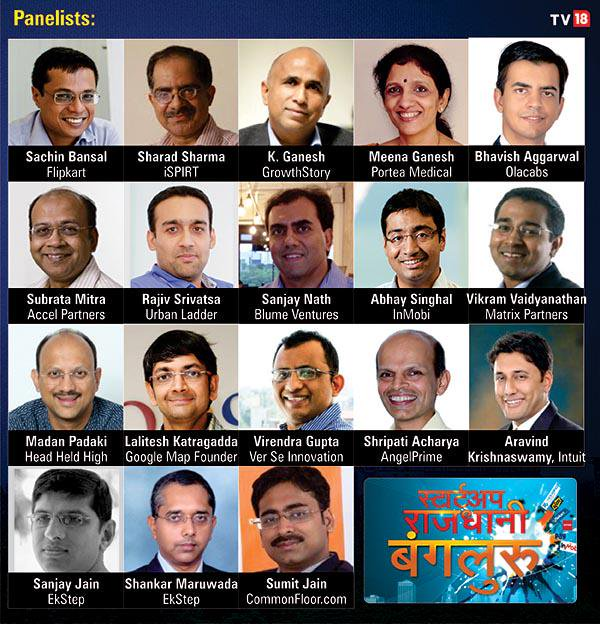
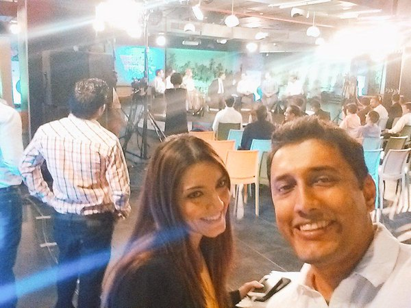
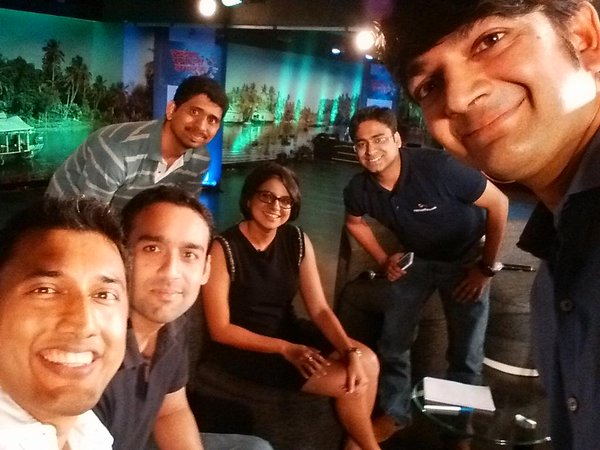
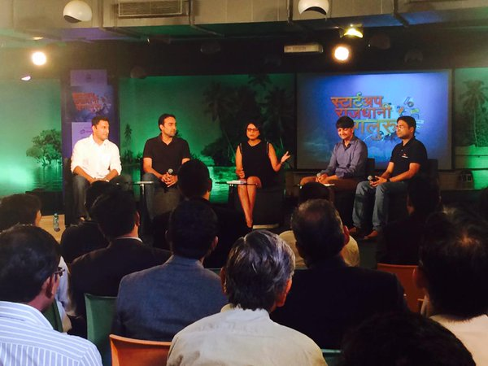
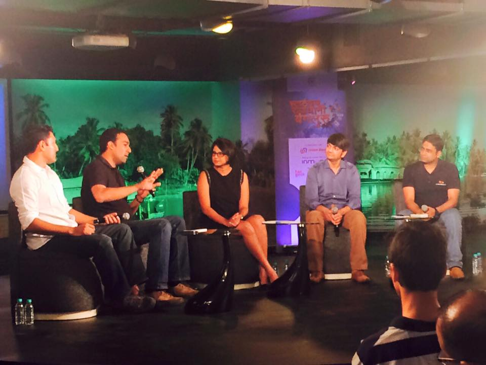
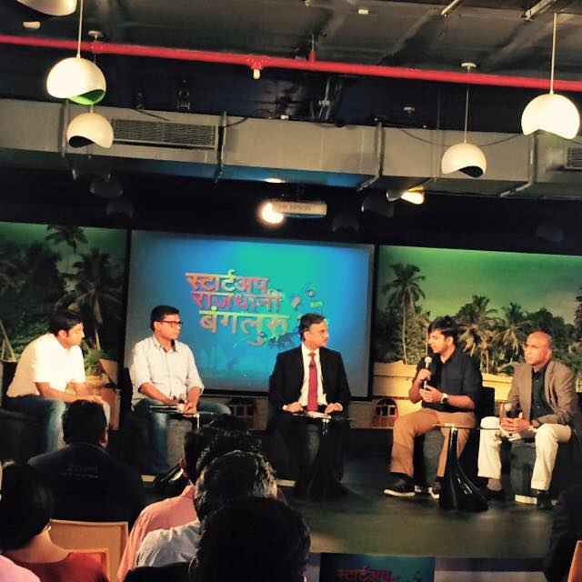
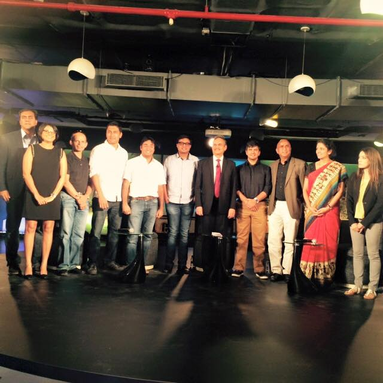

CNBC - Panel Discussion on Startups
I was honored to a part of a startup ecosystem panel discussion on CNBC that was apparently seen by 2 million viewers. The panel I was on was hosted by Harshada Sawant and included Rajiv of UrbanLadder, Lalit of Google Maps and Sumit of CommonFloor. We had fun struggling with our Hinglish while answering questions about disruptive innovation and trying to stick to the clock.
Live TV Shoot #startupskiawaaz

Other panels included leaders of some of the most popular startups today, and several unicorns like Flipkart, Ola and others. It was an awesome opportunity to see a TV shoot live, and even more fun watching the side stage action during commercial breaks
Behind the Scenes
 
Look Mom - I’m on live TV
 
With Founders of Flipkart, Ola, and Portea
 